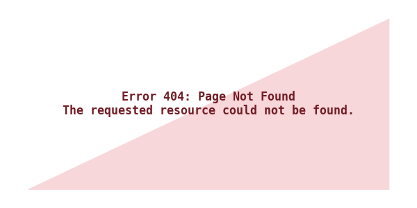

I chose this alt text because a shopper browsing an online store needs to know the core details ofthe garment—its color, clothing type, and unique pattern details the Ankara chest design without getting bogged down by subjective opinions like 'beautiful' or 'stunning.
I chose this alt text because the image is a link that takes users to the homepage of tekhub handbook.

I chose this alt because a user needs to understand the context of the picture and what happend in it, that it's a graduation celebration of happy students throwing their caps in the air.
I chose this alt because it explains to the user how the numbers of student has increased from 120 in 2024 to 340 in 2026.

I chose this alt because it's exactly what's on the picture so it can give the screen user a clear information about the error.

The alt of this image is empty because it already has the name of the person written on the photo, so the screen reader doesn't have to repeat the name twice.

The image icon has it's description on it so writing alt for it would cause screen reader to repeat it's self which might be comfusing to blind users.